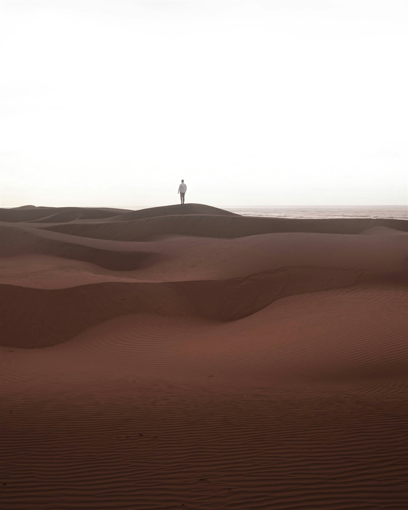

Left to
Chance
즐거운 경험을 만드는 디자이너, 임초원
04 Chapters · Work, People, Spaces, Objects
Chapters — 네 장 살펴보기
Criteria
네 장을 지나 남는 것.
저는 없는 것에서 경험하는 사람에게 가장 즐거운 것을 만들어 주려고 노력합니다. 그런 제 작업은 제 아카이브 사진과도 이어져 있습니다.
눈을 감아도 떠오르는, 빈 사막에서 피어오른 사람에 대한 사랑,
그리고 확률로 탄생하는 세상의 즐거움.
저는 언제나 즐거운 삶을 공유하기 위해 활동합니다.
Left to Chance — Chowon Archive